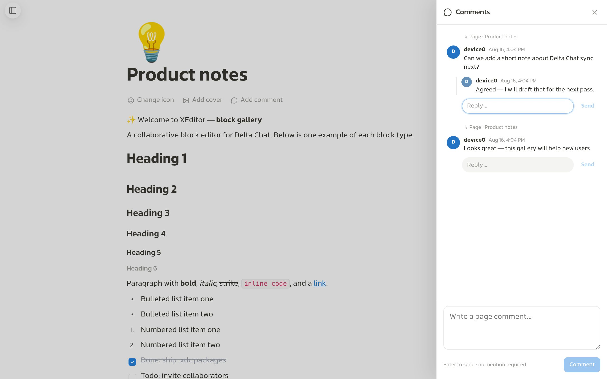
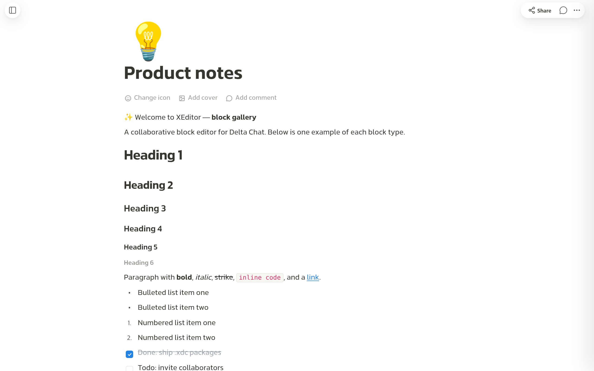

app.xdc
Default package for everyday use in Delta Chat — Arad fonts (all weights).
500 KB
Package size · free & open source
Collaborative block editor for Delta Chat
Built for chat — not another cloud doc you have to log into
Default package for everyday use in Delta Chat — Arad fonts (all weights).
Full = Arad only (all weights). Lite = Shabnam + Arad (Regular + Bold) for smaller size.
Headings, lists, todos, toggles, code, tables, images, polls — slash menu and Markdown paste.
Page threads and replies in a side panel — discuss without leaving the doc.

Markdown files, folders, ZIP, workspace JSON — open or bind from one modal.
